Reading this Documentation
Player's Guide
Mod-making Guidelines
Engine Documentation
- Basic Setup
- Script References
- Game States
- Game Events
- Special Functions
- Special Variables
- Text Commands
-
Objects
- The Player Object
- The Script Object
- The Audio Object

- The Input Object
- The Time Object
- The NewAudio Object
- The Inventory Object
- The Text Object
- The Bullet Object
- The Arena Object
- Projectile Management
- Sprites & Animation
- Key List
- Pixel-Perfect Collision
Overworld
- Installing the correct Unity version
- Basics
- How to create a Map
- How to create an Event
- How to animate an Event
- How to create a Shop
-
Objects
- The General Object
- The Event Object
- The Player Object
- The Screen Object
- The Inventory Object
- The Map Object
Error
JavaScript must be enabled for this documentation to be viewed.
Unofficial Unitale/CYF
Documentation
For Unitale version 0.2.1a
and Create Your Frisk version 0.6.3
Welcome to my unofficial Unitale Documentation rework!
The original documentation scared off a lot of new users, so Documentation V2.0 aims to be friendlier and easier to follow!
Every page in this documentation is available for viewing in the left-hand sidebar.
You may wish to start with Reading This Documentation.
We have a subreddit and a
Discord Server (alt)!
Please consider visiting these places to get modding help and feedback.
Credits
Code Highlighter - Rainbow by Craig Campbell (rainbowco.de)
Undertale and all of its assets are owned by Toby Fox. This engine was created with his permission.
Selling this engine, or anything created with it, is illegal as stated by Toby Fox.
| This is the title |
|---|
|
This is the description |
| Section Title | |
|---|---|
| Left 1 | Right 1 |
| Left 2 | Right 2 |
| Left 3 | Right 3 |
This is some regular text.
This is some bolded text.
This is some italicized text.
This is some underlined text.
This is some bolded red text.
This is some red text.
This is a quote.
This is some h4 text.
Esc Tooltip test.
And this is some inline code followed by some text.
This is some regular code. it belongs on its own line.
x pixels right and y pixels up.
- x: The amount of pixels right the Player will be moved.
- y: The amount of pixels up the Player will be moved.
-
ignoreWalls(optional,
falseby default): If true, the Player will ignore the Arena's boundaries.
Note thatPlayer.SetControlOverride(true)must be called first to use this correctly.
| State | Picture | When does it occur? |
|---|---|---|
"ACTIONSELECT" |
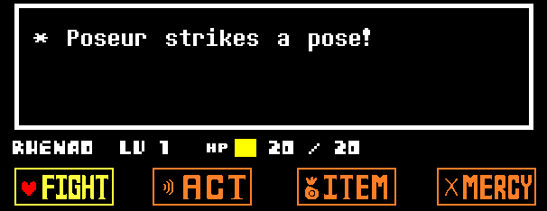 |
When returning to the Player's turn.
FIGHT, ACT, ITEMS and MERCY can be chosen. |
"ATTACKING" |
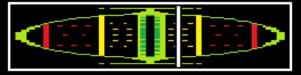 |
While attacking an enemy (the target and the line appear). |
-- Hello this is comment yes yes
test = " \"my string rules!\" \n\r lol \\ backslash too"
57.0123
-- has anyone really been far even as decided to use even go
and end in repeat break local return do for then else elseif function goto not if or until while
-- want to do look more like???
"and end in repeat break local return do for then else elseif function goto not if or until while"
correct = true
incorrect = false
print(1 == 2 and (5 + 7 - 3 / 1 ^ 3 % 9 * 2 | 4) or nil)
20 goto 10
function myThing(a, b, c)
end
print require module
"print require module"
thing(57)
my.thing(48)
enemies[1]
-- regex test
table
table.insert
math.random
tonumber
tonumber(7)
math.random(10, 20)
table.insert(test, 7)
table.insert()hello
-- m'regex
-- m'lady
-- finally, tables!
table.insert(temp, 7)
{ hi = "hi", there = "there" }
BattleDialog({"You are cool."})
end
| Create Your Frisk |
|---|
| Downloads | GitHub Release Page |
|---|
Which Engine do I Use?
Whichever one you pick is your preference, but CYF is recommended (see below).
Here is some information to help you choose:
Download links are to the right.
| Unitale | Create Your Frisk | |
|---|---|---|
| Latest Version | v0.2.1a | v0.6.3 |
| Last Updated | March 13th, 2016 | May 15th, 2019 |
| In active development | No | Yes |
| Windows Compatibility | Good | Good |
| Mac Compatibility | Bad | |
| Linux Compatibility | ||
| Branch status | The original project | A fork of Unitale |
| Open source | Yes | Yes |
* NOTE: CYF CAN play mods made for Unitale!
CYF features many new features Unitale does not have, including but not limited to: the Overworld, text objects, a more customizeable Player status, save files and permanent globals, better Audio control, numerous bug fixes and improvements, and more.
Updates to CYF are sent to the GitHub releases page first, and the Unitale Discord Server (alt) second, in the channel "#cyf-announcements".
How do I add Battles to Play?
The engine runs on a system called "Mods".
Mods are what people create and release, and are what you will download to play.
- Find and download a mod. See below for more information.
- Extract it. Some recommended programs for this are 7-zip, WinRAR and WinZip.
- Follow the instructions for your operating system:
- WINDOWS/LINUX USERS: Add the extracted folder to the engine's
Modsfolder. - MAC USERS: Follow the guide included in
How to add mods to CYF (Mac).txt.
Unitale has problems running on Mac. You may need to Use Wine and follow the procedure for Windows.
- WINDOWS/LINUX USERS: Add the extracted folder to the engine's
- Launch the engine. The mod(s) you added should now appear in the Mod Selection Screen.
Where can I find Mods to Download?
You can find mods to play by searching for them.
Use your favorite search engine to search for "unitale mods", "cyf mods", etc.
You can also Search the Subreddit.
Finally, you can also see the
Recommended Mods List.
This will be updated regularly.
How can I join the Unitale Discord Server?
We have a discord server featuring general and offtopic discussion, modding help channels, and a mod feedback
channel!
You can join it here (alternate link).
* You must read the #readme channel before trying to post!
The game window
Disclaimer Screen
Upon starting up Unitale or Create Your Frisk, you will be greeted with one of these two screens: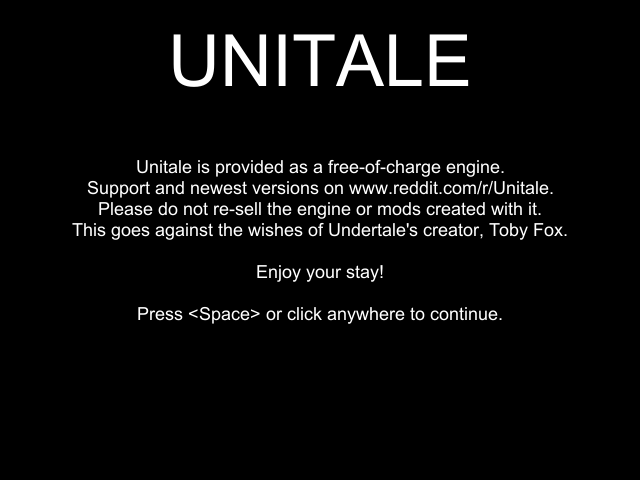 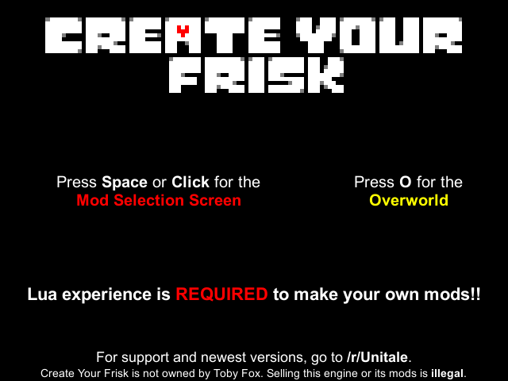
Clicking the screen or pressing Space will take you to the Mod Selection Screen.
In CYF, pressing O will prompt you to enter a player name (up to 9 characters in length), before taking you to the overworld.
Mod Selection Screen
The Mod Selection Screen allows you to choose and play encounters.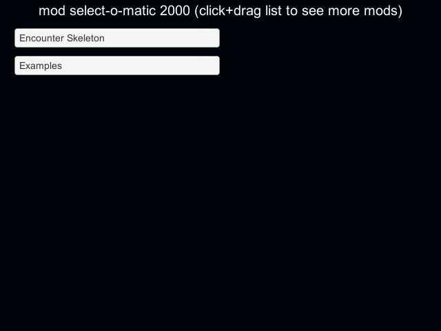
The Mod Selection Screen in Unitale and versions of CYF before
v0.6.2 looks like this.
Unitale comes with two mods: "Examples" and "Encounter Skeleton".
Simply Click on a Mod's name to open the Encounter Selection screen.
Then, Click on an encounter's name to play it, or click "Back" to return to the Mod list.
Mod Selection Screen (CYF)
The Mod Selection Screen allows you to choose mods to play.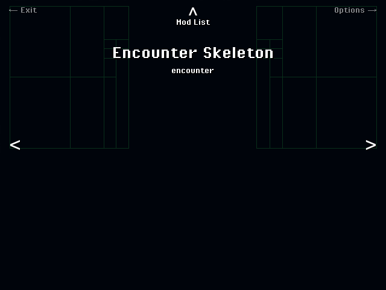
CYF's Mod Selection Screen from version
v0.6.2 onwards looks like this.
CYF comes with four mods: "Encounter Skeleton", "Examples", "Examples 2" and "RTLGeno".
Here are the things you can do on this screen:
- Click the background or press Z or Enter: Starts a mod with one encounter, or opens a list of encounters.
- "Exit": Returns you to the Disclaimer (Title) screen.
- "Options": Takes you to the Options Screen (see below).
- Click "Mod List" or press Up or C: Opens a small drop-down list that lets you instantly jump to any mods CYF can play*.
- Click the Left or Right Arrows or press Left or Right: Scrolls to the next/previous mod.
@ won't appear here.
Options Screen
The Options Screen allows you to customize CYF.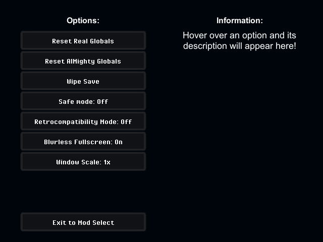
From here, Hover over a button on the left with the mouse cursor to see what it does,
or click Exit to Mod Select to return to the Mod Selection Screen.
Everywhere Else
The only other major screens you need to know about as a player are the Battle Screen and the Overworld.They function exactly the same and use exactly the same controls as the areas in Undertale they are meant to mimic.
See the Game Controls page to brush up on the engine's controls.
Installing and Playing Mods
The engine loads mods from the folder Mods in the executable's main directory.
In order for a mod to be visible and playable from the mod selection screen, its file structure must mirror this example:
Unitale or Create Your Frisk/
Mods/
Mod name/
Audio/
Lua/
Encounters/
Monsters/
Waves/
Sounds/
Sprites/
For further reference, check out the file structures of the example mods included with the engine.
Once you've extracted and set up the mod to follow the above structure, open the engine and it should be listed in the mod selection screen!
Main page: Troubleshooting (subreddit wiki)
Having issues with the program itself? Try seeing if your issue is here first, before posting about it.
* DOG ERROR SCREENS are covered in THIS page.
The Items Menu doesn't open
In Unitale, all battles had a pre-set, unchangeable set of items:DOGTEST1 through DOGTEST7.
CYF, however, has the Inventory Object, and with its inclusion, the default items were removed.
If you are playing a battle ported over from Unitale and wish to have its items back, follow these steps:
- CYF Version is
v0.6.2.2or greater: Enable Retrocompatibility mode. - CYF Version is
v0.6.2.1or less: Add these two lines toEncounterStartingin the encounter .lua file:
Inventory.AddCustomItems({"Dogtest1", "Dogtest2", "Dogtest3", "Dogtest4", "Dogtest5", "Dogtest6", "Dogtest7"}, {3, 3, 3, 3, 3, 3, 3}) Inventory.SetInventory({"Dogtest1", "Dogtest2", "Dogtest3", "Dogtest4", "Dogtest5", "Dogtest6", "Dogtest7"})
Bullets look strange after playing for a long time
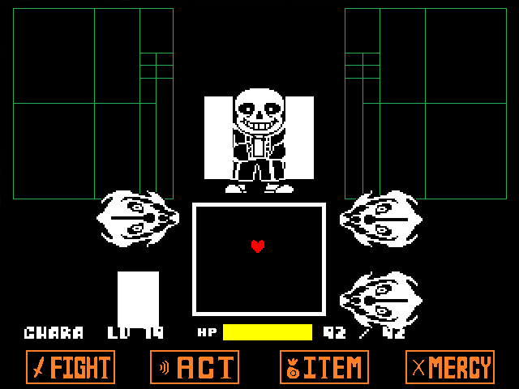 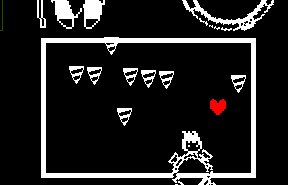If your situation appears similar to either of the above screenshots, you may have encountered a memory leak.
A memory leak is an issue exclusive to Unitale. CYF has fixed this issue.
In most cases of this bug, bullets may appear to suddenly use the wrong image, appear in the wrong place on screen, or change size inexplicably (if the bullet is supposed to have a custom scale).
Memory leaks become more likely to occur as more bullets appear in-game. They may also persist between loading different encounters.
The recommended steps to fix this issue are:
- Close and re-open the executable
- Switch from Unitale to CYF
- If in CYF, ensure that retromode is disabled
Mac: Mod select screen shows nothing
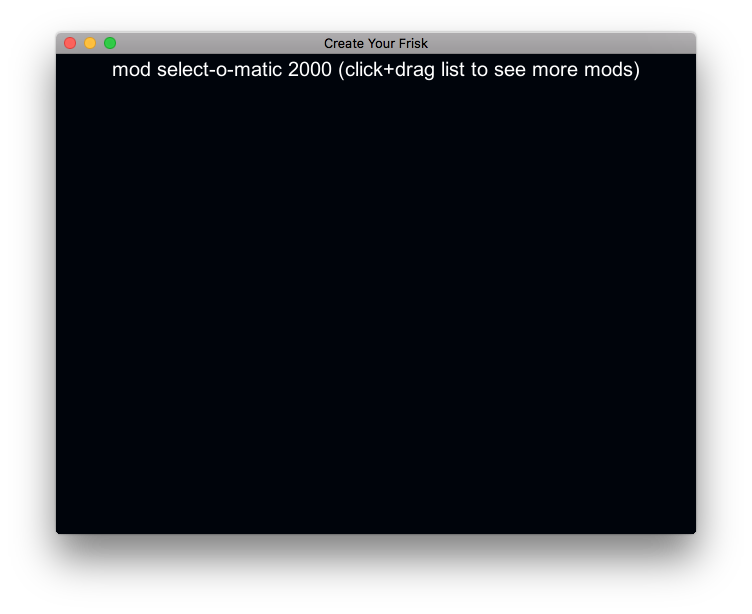We are very happy to say that CYF has fixed the issue of platform-specific bugs!
As of
v0.6.2.2, you should no longer encounter this issue.
However, if you are using Unitale or an old version of Create Your Frisk, read this:
First of all, Click on the CYF Executable.
Then, Click the Gear and click Show Package Contents.
Now: try to move the "Mods" and "Default" folders to the following locations in order:
Unitale or CYF install folder/Unitale or CYF install folder/(Unitale or CYF).app/Unitale or CYF install folder/(Unitale or CYF).app/Contents
Once it's installed, download a Windows release of Unitale or Create Your Frisk, and run it with Wine.
Linux: All button presses are doubled
We are very happy to say that CYF has fixed the issue of platform-specific bugs!As of
v0.6.2, you should no longer encounter this issue.
However, if you are using Unitale or an old version of Create Your Frisk, read this:
This is a strange issue that has to do with the version of Unity that the engine was compiled in.
Ensure that you are using Create Your Frisk v0.6.2 or higher, or the official Linux port of Unitale.
If all else fails, look into Wine (see above issue).
The program freezes during battle
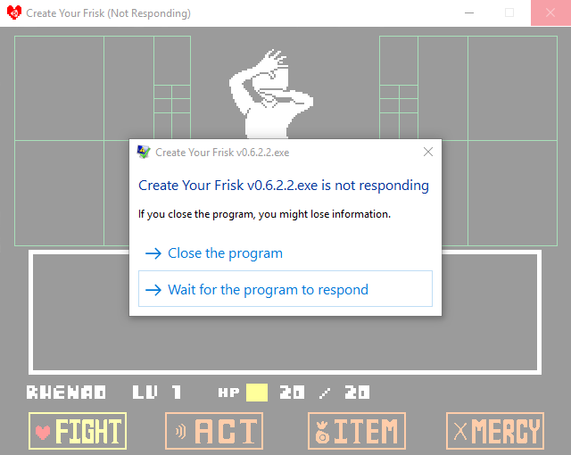This is most likely NOT an engine bug.
It is probably an infinite loop in your code.
To solve this, you will have to go through your code, and ensure that all while loops terminate properly.
For more on how while loops work, see here.
The program uses extreme amounts of system memory
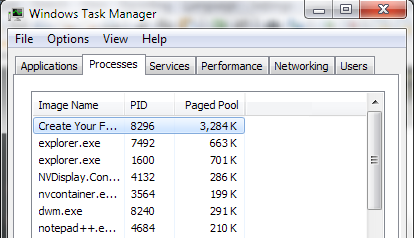We are very happy to say that CYF has fixed the issue of excessive memory build-up!
As of
v0.6.2, you should no longer encounter this issue.
However, if you are using Unitale or an old version of Create Your Frisk, follow these steps:
- Whenever possible, do not leave the engine open while not using it.
- The more times you open mods, the more memory is eaten by the engine. Close the engine at the first sign of slowdown.
- Limit the amount of major memory-using programs running on your computer at once.
(Some examples may include: Discord, Steam, Google Chrome, Firefox, an antivirus running a scan, files being copied or deleted, etc.)
My issue isn't listed, or the listed solutions do not work
- If you are using a mod made for Unitale in CYF, try enabling Retrocompatibility mode.
- See the subreddit wiki's Troubleshooting page.
- Otherwise, consider asking for help in the subreddit or the
Discord Server (alt).
We will help you as soon as we can.
In Battle
| Key | Action |
|---|---|
| Arrow Keys | Move in menus; Dodge in waves |
| W, A, S, D | |
| Z, Enter | Confirm; Advance text |
| X, Shift | Cancel; Skip text; move at half speed during waves (hold) |
| F9 | Toggle the debugger and FPS display |
| Alt + Enter, F4 | Toggle Fullscreen |
| Esc | Exit battle (unless unescape is set to true) |
| H | Display hitboxes of the player and bullets (only if the Debugger is already open) |
Overworld
| Key | Action |
|---|---|
| Arrow Keys | Move throughout the world and in menus |
| W, A, S, D | |
| Z, Enter | Interact; Confirm; advance text |
| X, Shift | Cancel; Skip text |
| F9 | Toggle the debugger and FPS display |
| C, Ctrl | Open menu |
| Alt + Enter, F4 | Toggle Fullscreen |
How do I get Started with Modding?
-

You MUST know sufficient Lua BEFORE you start coding!
See Learning Lua. -
Use a good text editor.
DON'T use regular Notepad.
Recommended editors are Notepad++ (not related to Notepad) and Sublime Text 3. -
Look at the example encounters.
Using a good text editor, open up some of the example .lua files and explore the structure of the variables and functions.
* Looking at released mods for coding advice is NOT recommended. -
READ THE DOCUMENTATION.
This is very important!!
The documentation contains a LOT of information you will absolutely NEED to make a mod.
Start by reading the introductory pages and refer to it while making your mod.
You should also consider using the search feature. -
Play around. This is one of the best ways to learn how to do anything.
Just copy the Encounter Skeleton and experiment with variables, functions and values everywhere! Really, just have fun! -
Look for tutorials (optional).
There are not very many user-made tutorials for this engine, but you can find them by searching the subreddit or the internet. -
Ask for help as needed.
If you need help understanding anything, feel free to ask for help!
See How do I get Modding Help?.
How do I use the Documentation?
Main page: Reading this Documentation.
This documentation includes instructions on how to use almost every feature of the engine available.
When you are first starting to make your mod, it is recommended to read each page of the Documentation, except for the Overworld section.
In general, you'll want to keep the Documentation open while making a mod, and refer to it as needed.
The new search feature is extremely useful in navigating the documentation.
How do I submit a finished Mod?
Congratulations on finishing your mod!
The basic procedure is this:
- Upload the mod to a file sharing website.
Recommendations are Dropbox, Google Drive, Mediafire and MEGA. -
Upload a preview of the mod to a video sharing website (optional).
Put the download link in the video description. -
Make a post in /r/Unitale.
Read the Posting Guidelines. Follow the rules for a [Mod] post.
If you have a video, link to it in your post's body. -
Make a post in the Discord Server (optional).
* You can find links to the Discord Server here.
Here are some guidelines to follow before posting:
- Only post the final version of your mod if possible!
-
It is highly recommended that you create a video preview to go with the mod.
The most recommended website to put a preview video on is Youtube.- Previews MUST be videos or gifs. Still images do not count, as they can be easily faked.
- A good program for screen recording is Open Broadcaster Software (OBS).
- Put the download link for your mod in the video's description.
-
If you are using Mediafire, MAKE SURE that you have NOT uploaded the mod as a Folder, but as a compressed file.
Users have to BUY Mediafire Premium to download Folders!! -
Try to avoid simple titles. If possible, start your title with an attention-grabbing phrase that also describes the mod.
Phrases such asMy first mod,A new, difficult encounterandMy friend made thisare just asking to be ignored.
How do I get Modding Help?
You can either use the subreddit or the Discord Server to ask for help.
You should follow these steps when asking for help. This is extremely important.
-
Show the error or problem.
We can't help if we don't know exactly what's going wrong!
Please explain IN DETAIL what you are trying to do and how it is not working.
-
Post the entire script(s)
to acode sharing site
.
Recommendations: pastebin or hastebin. -
Include the version of the engine. We need to know:
- Are you on Unitale or Create Your Frisk?
- What version of the engine are you using?
- What operating system are you on?
-
Make sure you have the requisite knowledge.
Again:
Make sure you're refreshed on Lua.
Also: refer to the Documentation as needed.
-
Test things on your own!
After someone tells you what to do, try it on your own before asking for more help.We are not here to make your mod FOR you.
Main page: Lua Coding Knowledge (subreddit wiki)
| Lua |
|---|
|
A programming language used by Garry's Mod, Roblox, and many others, including Unitale. |
| Links |
Official Site
Reference Manual Live Demo Programming in Lua: First Edition |
|---|
The First Step to Making a Mod
The first step to making a mod in Unitale and Create Your Frisk is to simply:
Learn Lua
From CYF's own title screen:
Lua is REQUIRED to use Unitale and Create Your Frisk. All mods for the engine are coded in Lua, which is read by the engine through use of Moonsharp, a Lua to C# interpreter.
It is not the responsibility of this documentation, the Unitale discord server or the Unitale subreddit to teach you Lua.
However, we can certainly link you to some great starting places for learning Lua.
See the next section, Lua Tutorial Links.
Lua Tutorial Links
The lua-users Tutorials Directory is our recommended tutorial for new users.
Please try this one first!
You need to know the red ones here before you can use the engine:
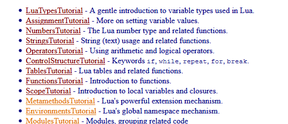
You can also check out:
- Check out Programming in Lua: First Edition for a very in-depth step-by-step guide.
- Another good read is tutorialspoint's Lua guide.
Testing Your Lua Code
Testing your Lua code is very important. This is the easiest way to learn the language, by far.
We recommend the use of the in-browser Lua demo to test your code.
Keeping it open alongside whatever tutorial(s) you are reading allows you to test new information right away.
But if you really want to test it in a console window on your desktop, you can also download Lua:
Where to find Information
This documentation is organized into several different sections:
-
Player's Guide: This section tells you how to set up the engine and load mods for playing.
It also covers any errors you might encounter while using the engine (but not errors you get while making a mod). -
Mod-making Guidelines: This section gives information on how to develop your own mod and get used to the engine!
Lua is required to use this engine, so here is a page with info on learning it. -
Engine Documentation: This section covers all features of the engine you can use!
This isn't specifically going to teach you how to make a mod, that's what Mod-making Guidelines is for.- The sub-section Script References explains everything you can possibly access from each of the 3 script types.
- The sub-section Objects covers all of the different engine objects you can use in your scripts.
-
Overworld: Create Your Frisk has a functioning Overworld system, but you must use Unity to make your own.
- The sub-section Objects explains all of the Overworld-specific objects you can use in the Overworld.
On top of that, this documentation also has a search feature!
Type anything in the search bar to the left and you should be able to find what you're looking for.
Understanding Documentation Syntax
This documentation uses examples that show off the syntax (usage) of functions and variables.
Here is an example and how to interpret it:
x pixels right and y pixels up.
- x: The amount of pixels right the Player will be moved.
- y: The amount of pixels up the Player will be moved.
-
ignoreWalls(optional,
falseby default): If true, the Player will ignore the Arena's boundaries.
Note thatPlayer.SetControlOverride(true)must be called first to use this correctly.
| Part | What is it? |
|---|---|
Player.Move |
This is the name of the function or property. You will use this name from inside your Lua scripts. |
x |
These are the arguments the function will use. You can tell their types by hovering over the argument. |
y | |
ignoreWalls |
|
ignoreWalls = false |
ignoreWalls is an optional argument.If you leave out this argument, it will use the default value of false.
|
[E/M/W] |
These are script labels, telling you which scripts this can be used in. See Script Labels. |
Finally, here is the proper usage for this function:
-- Code -- -- What it does --
------------------------- --------------------------------------
Player.Move(1, 1) -- x = 1, y = 1, ignoreWalls = false
Player.Move(2, 0) -- x = 1, y = 1, ignoreWalls = false
Player.Move(50, 50, true) -- x = 50, y = 50, ignoreWalls = true
Script Labels
In the previous example, you may have noticed this text just after the function's syntax: [E/M/W]
These are script labels. In this documentation, these will be present next to the names of functions and objects accessible from different scripts.
They simply refer to the types of scripts something is available from:
- E: Encounter Scripts
- M: Monster Scripts
- W: Wave Scripts
What does it mean?
When making your mod, you will frequently run into Error Screens:
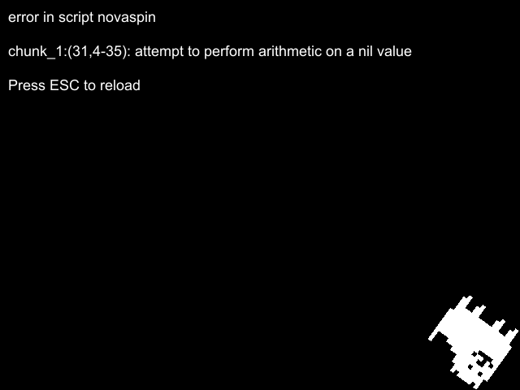
Using this image as an example, let's break down what it means:
| Part | What is it? |
|---|---|
error in script novaspin |
This is the location of the error. The file we need to look at is called novaspin.lua.
|
31 |
This is the line number that is causing the error. Inside of novaspin.lua, we need to go to line 31.
|
4-35 |
You can usually ignore this. This is the character range of the error on the line. |
attempt to perform arithmetic on a nil value |
This is the error message and probably the most important part. This tells you what's wrong with the given line. |
In this example, it'd now be the modder's job to search line 31 for any variables that might be nil.
How do I fix it?
It's your job to use your Lua knowledge to debunk the error.
- Make sure you're well-versed in Lua first.
- If applicable, read the Documentation's
entry on the function or variable you're using.
- If applicable, review this page
on how to interpret the Documentation.
After that, all that can be said is "solve it as you would normally solve Lua errors".
Some error messages will have special instructions, such as:
chunk_2:(42, 8-21): Inventory.AddItem: The first argument (item name) is nil.
See the Documentation for proper usage.
Just follow the instructions to help solve your error.
In this case,
Inventory.AddItem is not being used right.You'd have to read what the Documentation says about this function and make sure it's set up right.
When in doubt, you can ask for Modding Help.
What is a Mod?
A Mod is basically a battle, or a set of battles, that can be loaded into the engine.
A Mod can have any number of encounters, which are the battles themselves.
In-game, Mods are chosen from the Mod Selection Screen.
Mods with one encounter will instantly load said encounter on click.
Mods with more than one encounter will display them in a list on click.
In this example, Examples is the Mod, and it has multiple Encounters.
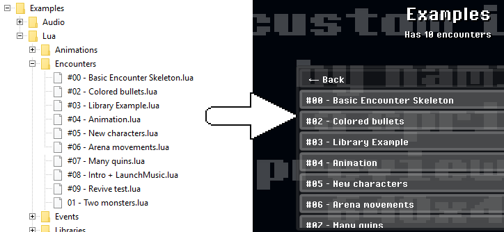
Choosing an encounter will load that encounter and begin the battle.
| An example mod setup. |
|---|
| 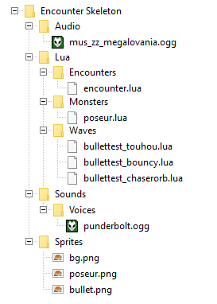 |
Mod Structure
TODO
Main Purposes
The Encounter Script is the most important of all the scripts.
It controls everything about the encounter in general, including
items, turns, important events, the Game Over screen, music, the encounter text, and more.
More notably, it also houses and controls the Monster Scripts
and Wave Scripts.
This is the best place to put custom behaviors such as turn counters and cutscenes / intros.
Game Events
Main page: Encounter Script Events [E]
Happens as soon as everything has loaded and the encounter is ready.
This is the best place to set up Player stats and the Inventory.
Happens whenever the enemies start talking.
This is the best place to set monster dialogue depending on how the encounter is progressing.
Happens whenever the enemies stop talking and the waves begin.
This is the best place to choose which waves should be played.
Happens whenever the active waves have finished.
This is the best place to set encounter text based on how the battle is going.
Happens whenever you select the Spare option in the MERCY menu.
This event happens regardless of whether or not any enemies are spareable.
Happens whenever you use an item from the ITEMS menu.
This event is special. It happens whenever the game's state is changed.
This function will be called on every frame during the entire battle. Even during waves.
This function is called every time an Encounter script bullet hits the Player.
Functions
All-Script Functions [E/M/W]
Main page: All-Script Functions [E/M/W]
These are functions accessible from all scripts.
Variable-related
Main page: Variable-related
Functions that read or write to variables are here.
Globals will be cleared whenever the battle ends (you've pressed Esc or died).
A Real Global is exactly the same as a Global, except that it can be accessed from the Overworld as well.
Additionally, when the player saves in the Overworld, Real Globals are saved.
Real Globals will be cleared whenever the game closes.
Usage is exactly the same as with Globals.
An AlMighty Global is exactly the same as a Real Global, except that it is immediately saved to the player's save data.
AlMighty Globals can only be cleared by choosing
Reset AlMighty Globals from the Options screen.
Usage is exactly the same as with Globals.
Very useful for showing the values of any variables you may have,
and to confirm that certain code is running.
State-related
Main page: State-related
Functions that control Game States are here.
Very useful for showing the values of any variables you may have,
and to confirm that certain code is running.
Will return a name IN ALL CAPS, such as
"ACTIONSELECT".If the game is in
"ENEMYDIALOGUE", this will return "ENEMYDIALOGUE", and so on.
"ENEMYSELECT" to decideif the player will use an ACT command on the enemy or attack them.
Simply use this just before calling
State("ACTIONSELECT").
Battle-related
Main page: Battle-related
Functions that control the battle in general are here.
| Battle dialogue. |
|---|
BattleDialog({"POSEUR 1 ATK 1 DEF\n"
.. "Check message goes here."})
|
Providing multiple strings will add additional text that is displayed when the user presses Z / Enter.
\nwill go to the next line, whilst adding a star (*).\rwill go to the next line, without adding a star.\"and\'will each display a"or"respectively.
Text will NOT go to the next line automatically!
See autolinebreak.
By default, time-based movement is used.
False by default.
False by default.
See Pixel-Perfect Collision.
Encounter Script Functions [E]
Main page: Encounter Script Functions [E]
These are functions accessible from all scripts.
Grabs a random comment from a random enemy. Mainly used to set encounter text.
Only active enemies will be chosen. Ones who are dead or removed with SetActive will be ignored.
Changes the sprite layer of the buttons AND the UI to one of your choice.
This includes the FIGHT, ACT, ITEM and MERCY buttons,
AND the player's name, lv, hp and hp bar.
Objects
TODO
Variables
All-Script Variables [E/M/W]
Main page: All-Script Variables [E/M/W]
These are variables that can be used from any script.
They are also all CYF-exclusive, so be warned!
true.In Unitale, this will be
nil.
true if you have Safe Mode enabled in the Options menu, false otherwise.
true if you are playing on a Windows computer, false otherwise.
Encounter Script Variables [E]
Main page: Encounter Script Variables [E]
Variables usable from an Encounter script.
Battle-related
Variables that control the battle in general.
Your Mod/Audio/ and played automatically.So if you want to play
myBattle.ogg, set this variable to "myBattle".
| Encounter text. |
|---|
encountertext = "Poseur strikes a pose!" |
appears when it's the player's turn (see the image to the right).
\nwill go to the next line, whilst adding a star (*).\rwill go to the next line, without adding a star.\"and\'will each display a"or"respectively.
every name in this table will be loaded as a wave the player will have to defend against.
Most of the time, you'll only want one wave at a time.
But you can load multiple waves at the same time.
So if it's set to
4.0, all waves will last only 4 seconds.
| Arena size. |
|---|
| 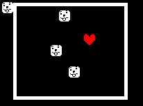 |
arenasize = {155, 130} |
the enemies start speaking and at the beginning of waves.
will be loaded as a Monster Script.
During and after EncounterStarting, this table will become...
moved to a matching position on-screen from this table.
This table must be present to load enemies!
All measurements are measured from the point
(x = 320, y = 231) on screen.
enemies = {"poseur", "posette"}
enemypositions = {
{-20, 0} -- spawn "poseur" 20px left of normal
{ 20, 10} -- spawn "posette" 20px right and 10px higher than normal
}
"DEFENDING", this will fill withScript Objects pointing to every active Wave Script.
End of battle-related
Variables that control the way the battle ends, whether that be by
the player quitting, fleeing, or dying.
They are also all CYF-exclusive, so be warned!
| No flee option. |
|---|
| 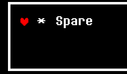 |
flee = false |
to either fail or succeed every time.
true, whenever the player dies, their soul will re-fuse, as in Undertale,and they will be revived and continue battle.
Text-related
Variables that control text, including BattleDialog, encountertext and Text Objects.
They are also all CYF-exclusive, so be warned!
| Auto-line breaking. | |
|---|---|
| 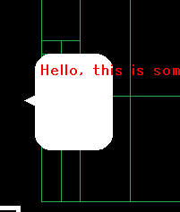 | 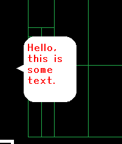 |
| (Regular) | autolinebreak = true |
true, forces BattleDialog, encountertext and
enemy dialogue to automaticallygo to the next line when text would go outside of the Arena / dialogue bubble.
true, when the player skips text with X, any Text Commands that haven't been typed yet will activate.
Extra Notes
- This is the best place to fill up the player's Inventory with Items.
- Use this script to control the entire rest of the battle, including enemies and Wave scripts.
- This script is the only truly required script when making a mod.
- Use this script to control what happens when the player quits, exits, dies or flees.
- This script controls which waves/attacks will play.
- Can set the initial music and battle text/encounter text.
- Can change the layer of the UI, buttons and player stats.
- Use to control game states and determine what happens when entering and exiting them.
Main Purposes
The Monster Script is the second-most important, only to the Encounter Script.
It controls everything about a Monster (enemy) and its functionality, including
behavior when attacked, dialogue, stats like hp, and ACT commands.
At the start of an encounter, all strings in the enemies table are turned into Monster Scripts with the matching names.
So, there can be multiple monster scripts/enemies in an encounter.
Game Events
Main page: Monster Script Events [M]
Happens the moment the player's attack hits this monster (when their "slash" animation finishes).
* The monster's hp variable will have already updated by this point.
Happens the moment your monster dies (shaking animation ends and their
hp is <= 0).
If you add this, your monster will NOT die automatically.
They must be killed manually with
Kill() (main page).
Happens whenever you successfully spare a spareable monster with the Spare option.
If you add this, your monster will NOT be spared automatically.
They must be spared manually with
Spare() (main page).
Happens as soon as the player presses Z during the state
"ATTACKING".
Call
SetDamage here (main page) to forcefully set the damage the Player's attack will do.
Happens just before HandleAttack, and before the damage numbers and hp bar appear.
The attack's damage has not been applied yet.
Happens when selecting an act command for this monster.
Functions
Main page: Monster Script Functions [M]
Instantly changes the monster's displayed image to
Your Mod/Sprites/filename.png.
Instantly makes a monster active or inactive.
Monsters are active by default, until they are killed or spared.
Inactive monsters will not say dialogue, show up in menus or run any game events.
Instantly kills this monster, turning it into dust and making it inactive.
Instantly spares this monster, making it transparent and inactive alongside a particle effect.
Sets the amount of damage this monster will take the next time it is attacked by the player.
Can be negative.
The best place to call this is BeforeDamageCalculation.
Moves the enemy's sprite a set amount of pixels right and up.
Moves the enemy's sprite to a set position on screen.
NOT RELATED to enemypositions!
(0, 0) is the bottom-left corner of the screen!
Controls whether the enemy's sprite is bound to the Arena.
If bound, the enemy will move up and down as the Arena resizes.
Sets the enemy's dialogue bubble position relative to its original position.
Entering
(0, 0) would return the bubble's position to normal.
Sets the enemy's hp bar and damage number positions relative to their original positions.
Entering
(0, 0) would return their positions to normal.
The damage UI is on a layer above the Arena.
Changes the position of the red slash (attack animation) relative to its original position.
Entering
(0, 0) would return its position to normal.
The slice animation is on a layer above the Arena.
Game States
Inside battles, the engine uses 9 different game states to control the flow of battle.
Together, they function identically to Undertale's battle system.
These states are passed as arguments to EnteringState (see
EnteringState), are given by
GetCurrentState() (see GetCurrentState), and must be
manually passed to State (see State) when using it.
Normal States
These states are entered automatically as the player plays a standard encounter,
and each mirror a part of a standard Undertale battle:
| State | Picture | When does it occur? |
|---|---|---|
"ACTIONSELECT" |
When returning to the Player's turn.
FIGHT, ACT, ITEMS and MERCY can be chosen. |
|
"ATTACKING" |
While attacking an enemy (the target and the line appear). |
|
"DEFENDING" |
When starting a wave. | |
"ENEMYSELECT" |
|
When choosing FIGHT or ACT. |
"ACTMENU" |
When selecting an act command to use on an enemy. |
|
"ITEMMENU" |
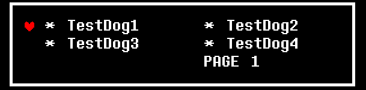 |
When selecting an item in the ITEMS menu. |
"MERCYMENU" |
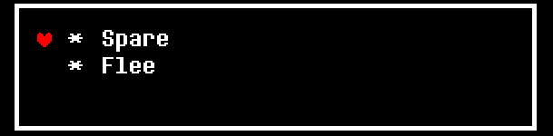 | After choosing MERCY. |
"ENEMYDIALOGUE" |
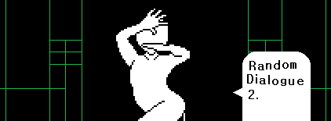 |
When your enemy/enemies start speaking. |
"DIALOGRESULT" |
When calling BattleDialog or usingthe default "Check" command. |
Special States
These states are entered manually by calling State
(see State),
and each have a special, unique purpose:
| State | What does it do? | How can it be used? |
|---|---|---|
"NONE" |
Stops all default engine functions. Pressing buttons will not do anything. Looks like ACTIONSELECT, but the text box is empty. |
Enter with State("NONE").
Very useful for disabling the default Unitale/CYF engine, and turning your mod into a Lua sandbox. Technically, the very first frame of battle before EncounterStarting() takes place in the state NONE.
|
"DONE" |
Instantly ends the battle.
Returns to the Mod Selection Screen normally, or to the Overworld if applicable. |
Enter with State("DONE").
Its main and only use is to instantly force the player out of the battle. |
Pausing the Engine
There is something very special you can do, by typing:
State("PAUSE")
Doing this will pause the engine.
Everything will be completely frozen. The player can't move, text doesn't type, and waves pause as well.
* While the engine is paused, GetCurrentState() will give the
last active state before pausing.
To resume gameplay, use
State with the last active state, or type:State(GetCurrentState())
The only thing that's not frozen is the Encounter Update Loop (see Update).
This can be useful for implementing a "pause button" into your mod, or something else like that.
Here is an example of a pause button script:
-- encounter script
paused = false
function Update()
-- When "P" is pressed
if Input.GetKey("P") == 1 then
-- Pause the game
if paused == false then
State("PAUSE")
paused = true
-- Resume the game
else
State(GetCurrentState())
paused = false
end
end
end
What are Game Events?
Game Events are functions that are called automatically at certain points in the encounter.
As an example, EncounterStarting() is called when the encounter starts.
Any code you put in this function will be run when the encounter starts:
function EncounterStarting()
-- As soon as the encounter starts...
Player.name = "Temmie" -- Change the player's name to Temmie
endGame events are script-specific, meaning they are exclusive to certain types of scripts.
Encounter Script Events [E]
Happens as soon as everything has loaded and the encounter is ready.
This is the best place to set up Player stats and the Inventory.
Some other uses include adding
Audio.Stop() here to disable music for the encounter,and adding a
State call to immediately change the game state.
The Player and other objects will not be active/loaded until this event.
Happens whenever the enemies start talking.
This is the best place to set monster dialogue depending on how the encounter is progressing.
If no enemies have any current or random dialogue, this event will be skipped.
Happens whenever the enemies stop talking and the waves begin.
This is the best place to choose which waves should be played.
Happens whenever the active waves have finished.
This is the best place to set encounter text based on how the battle is going.
By default, the code
encountertext = RandomEncounterText() is here.This is usually for the best.
See RandomEncounterText for more information.
Happens whenever you select the Spare option in the MERCY menu.
This event happens regardless of whether or not any enemies are spareable.
Spareable enemies get spared before this function is called.
Happens whenever you use an item from the ITEMS menu.
-
item_ID: The name of the item the Player has chosen.
Will be in ALL CAPS, such as in"DOGTEST1". -
position: The numbered position in the ITEMS menu that was chosen.
So if the Player chose the 3rd item in their inventory, this would be 3.
This event is special. It happens whenever the game's state is changed.
Manually calling
State from inside this function will NOT call
EnteringState a second time.
-
newstate: The name of the game state the engine is entering.
See Game States. -
oldstate: The name of the game state the engine is leaving.
See Game States.
To help illustrate just what this does, here is a script that replicates some previous functions with
EnteringState:
-- Remaking the other Encounter script events using EnteringState
function EnteringState(newstate, oldstate)
if newstate == "ENEMYDIALOGUE" then
-- same as EnemyDialogueStarting()
elseif oldstate == "ENEMYDIALOGUE" then
-- same as EnemyDialogueEnding()
-- alternatively, use `if newstate == "DEFENDING" then`
elseif oldstate == "DEFENDING" then
-- same as DefenseEnding()
end
end
For more information, see Game States.
This function will be called on every frame during the entire battle. Even during waves.
Works exactly the same as Update() in Wave scripts.
This function can be very powerful. Any code you put in here will be run on every frame.
So, you can control your Encounter like you'd control a wave.
Some example uses of this are screen flashes, fade/transition effects, creating cutscenes, reading keyboard input, monster animations,
and one can even use
State("NONE") and this to gain
total control over the engine.
This function is called every time an Encounter script bullet hits the Player.
Works exactly the same as OnHit() in Wave scripts.
Monster Script Events [M]
Happens the moment the player's attack hits this monster (when their "slash" animation finishes).
* The monster's hp variable will have already updated by this point.
-
damage: The amount of damage dealt by the player's attack.
Special cases:- If the player didn't attack, this will be
-1. - If the player missed, this will be
0.
- If the player didn't attack, this will be
Happens the moment your monster dies (shaking animation ends and their
hp is <= 0).
If you add this, your monster will NOT die automatically.
They must be killed manually with
Kill() (main page).
* Will only happen when the Player kills the monster using FIGHT.
Kill() will not trigger this function.
Happens whenever you successfully spare a spareable monster with the Spare option.
If you add this, your monster will NOT be spared automatically.
They must be spared manually with
Spare() (main page).
* Will only happen when the Player spares the monster using MERCY.
Spare() will not trigger this function.
Happens as soon as the player presses Z during the state
"ATTACKING".
Call
SetDamage here (main page) to forcefully set the damage the Player's attack will do.
Happens just before HandleAttack, and before the damage numbers and hp bar appear.
The attack's damage has not been applied yet.
Happens when selecting an act command for this monster.
-
command: The name of the act command used by the player.
* Will be IN ALL CAPS!!
Such as"DANCE"when choosing"Dance".
Here is an example Moldsmal script to show you how you can spice things up with variables:
commands = {"Sing", "Dance", "Wiggle"} --somewhere at the beginning
wigglecounter = 0 --let's keep a counter to check how often we've wiggled
function HandleCustomCommand(command)
if command == "SING" then
BattleDialog({"You sing your heart out. It's in the arena now."})
elseif command == "DANCE" then
BattleDialog({"You busted out your best moves."})
elseif command == "WIGGLE" then
if wigglecounter == 0 then --you can use variables to make commands more exciting!
BattleDialog({"You just kind of stood there and wiggled."})
elseif wigglecounter == 1 then
BattleDialog({"You're still kind of standing there and wiggling."})
else
BattleDialog({"Your wiggled so often that your wiggling technique\ris now legendary."})
end
wigglecounter = wigglecounter + 1 --be sure to increase the wiggle counter, or it'll stay at 0
end
end
Wave Script Events [W]
This function is called every frame (usually at 60FPS) while monsters are attacking (the
"DEFENDING" state).
Update your bullets here:
See Projectile Management.
This function is called whenever the wave ends.
This is the perfect place to call
bullet.Remove() on all your bullets.
EndWave() will call this function one time before ending all waves.
This function is called every time a bullet hits the Player.
If you add this, bullets WON'T hurt the Player anymore by default.
The player must be hurt manually with
Player.Hurt (main page).
This can be useful in creating blue, orange and green bullets, and other systems.
See Projectile Management.
This page outlines the various Functions you can use from your own scripts.
All-Script Functions [E/M/W]
Functions usable from all scripts.
Variable-related
Functions that read or write to variables are here.
Globals will be cleared whenever the battle ends (you've pressed Esc or died).
- name: The name of the Global Variable to write to.
-
any_value: The value to write to the Global.
Can be of any data type. Think numbers, strings, booleans, nil values, tables, and even functions.
Can be used as an alternative to The Script Object if you're not comfortable with using it.
- name: The name of the Global Variable to read from.
Here is an example using both
SetGlobal and GetGlobal:
-- -- -- --
-- this is the ENCOUNTER script --
-- -- -- --
function EncounterStarting()
SetGlobal("turncount", 1) -- make a turn counter that starts at 1 (first turn)
end
function DefenseEnding()
local turncount = GetGlobal("turncount") -- retrieve the value of "turncount"
turncount = turncount + 1 -- increase the value on turn end
SetGlobal("turncount", turncount) -- update the global
end
-- -- -- --
-- this is a MONSTER script --
-- -- -- --
function HandleCustomCommand(command)
-- create an ACT command to display the current turn number
if command == "COUNT" then
BattleDialog({"You ask the enemy how\rmany turns have passed."})
local turncount = GetGlobal("turncount") -- get the global
currentdialogue = tostring(turncount) .. "\nturns." -- display it
end
endA Real Global is exactly the same as a Global, except that it can be accessed from the Overworld as well.
Additionally, when the player saves in the Overworld, Real Globals are saved.
Real Globals will be cleared whenever the game closes.
- name: The name of the Real Global Variable to write to.
-
any_value: The value to write to the Real Global.
Can ONLY be a number, string, boolean, or nil.
* Because Real Globals persist between Mods, mods can read and write to Real Globals from other mods.
Be careful when choosing variable names!
- name: The name of the Real Global to read from.
Usage is exactly the same as with Globals.
An AlMighty Global is exactly the same as a Real Global, except that it is immediately saved to the player's save data.
AlMighty Globals can only be cleared by choosing
Reset AlMighty Globals from the Options screen.
- name: The name of the AlMighty Global Variable to write to.
-
any_value: The value to write to the AlMighty Global.
Can ONLY be a number, string, boolean, or nil.
* Because AlMighty Globals persist between Mods, mods can read and write to AlMighty Globals from other mods.
Be careful when choosing variable names!
- name: The name of the AlMighty Global to read from.
Usage is exactly the same as with Globals.
-
text: Text to display in the debugger.
Don't forget thattostringexists!
Very useful for showing the values of any variables you may have,
and to confirm that certain code is running.
State-related
Functions that control Game States are here.
This will also call EnteringState, if it is not called inside
EnteringState already.
-
state_to_go_to: A Game State to switch to. You can find a list in Game States.
Remember that the name must be in ALL CAPS, as inState("ACTIONSELECT").
This function is very powerful, and if called from the Text Command [func:x], you can change the game's state even during Battle Dialog and enemy dialogue.
See Game States.
Will return a state name IN ALL CAPS, such as
"ACTIONSELECT".If the game is in
"ENEMYDIALOGUE", this will return "ENEMYDIALOGUE", and so on.
If the game is paused, this will return the name of the last active state.
See Game States.
"ENEMYSELECT" to decideif the player will use an ACT command on the enemy or attack them.
Simply use this just before calling
State("ENEMYSELECT").
Your input will determine a few things. See below.
-
mode:
- If
"FIGHT", enemies' health bars will appear, and choosing an enemy will attack them. - If
"ACT", enemies' health bars will NOT appear, and choosing an enemy will open the ACT Menu.
- If
Battle-related
Functions that control the battle in general are here.
Providing multiple strings will add additional text that is displayed when the user presses Z / Enter.
Look at the example monster scripts for more example usage.
| Battle dialogue. |
|---|
BattleDialog({"POSEUR 1 ATK 1 DEF\n"
.. "Check message goes here."})
|
-
list_of_strings: A table full of strings to display as Battle Dialog.
Special characters:\nwill go to the next line, whilst adding a star (*).\rwill go to the next line, without adding a star.\"and\'will each display a"or"respectively.
-- custom Check message. shows up as: -- _____________________________ -- |* ENEMY - INF ATK INF DEF | -- |* You can never defeat | -- | him. | -- ¯¯¯¯¯¯¯¯¯¯¯¯¯¯¯¯¯¯¯¯¯¯¯¯¯¯¯¯¯ BattleDialog({"ENEMY - INF ATK INF DEF\nYou can never defeat\rhim."}) -- some custom ACT text BattleDialog({"You tell Poseur you don't\rwant to fight any more."}) -- multiple lines. the player has to press "Z" to see the second one BattleDialog({"You strike a pose.", "Poseur marvels at your\rglorious form!"})
Text will NOT go to the next line automatically!
See autolinebreak.
This function enters the Game State
"DIALOGRESULT".
By default, time-based movement is used.
-
mode:
- If
true, the game will use frame-based movement (2px/frame). - If
false, the game will use time-based movement (120px/sec).
- If
This is useful if your encounter needs a certain degree of precision with the player's position.
False by default.
-
bool:
- If
true, the Player will take 1 less damage for every 5 DEF points they have.
Refer to this chart to see the player's DEF points by LV.
Additionally, you can use the Inventory Object to create armor for the player to wear,
and set its amount of DEF with Inventory.SetAmount. - If
false, the Player will always take the same amount of damage no matter what.
- If
False by default.
-
bool:
- If
true, the Pixel-Perfect Collision System will be enabled by default when bullets are created. - If
false, the regular collision system will be used by default for new bullets.
- If
See Pixel-Perfect Collision.
Encounter Script Functions [E]
Functions usable from an Encounter script.
Mainly used to set encounter text.
Here is how it is chosen:
Only active enemies will be chosen. Ones who are dead or removed with SetActive will be ignored.
This includes the FIGHT, ACT, ITEM and MERCY buttons,
AND the player's name, lv, hp and hp bar.
-
layer: The name of any existing sprite layer to move the buttons and UI to.
* Enter"default"to reset the buttons and UI to their default layer.
For a list of default sprite layers you can pick from, see CreateLayer.
See CreateLayer.
Monster Script Functions [M]
Functions usable from Monster scripts.
Battle-related
Functions that control what it's like to battle this monster are here.
Your Mod/Sprites/filename.png.
Can be used with [func:x] to change sprites during dialogue.
-
filename: The name of the image in
Your Mod/Spritesto load.
Images must be.pngfiles. Don't include the extension in this function.
Monsters are active by default, until they are killed or spared.
Inactive monsters will not say dialogue, show up in menus or run any game events.
-
active:
- If
true, the monster will become active if it isn't already. - If
false, the monster will become inactive if it isn't already.
- If
This can be very useful for having multiple enemies that show up later in the battle,
especially when used together with SetSprite.
Does NOT activate OnDeath.
Does NOT activate OnSpare.
Can be negative.
The best place to call this is BeforeDamageCalculation.
Graphical
Functions that only control the way the enemy appears are here.
They are also all CYF-exclusive, so be warned!
- x: The amount of pixels right to move the monster sprite.
- y: The amount of pixels up to move the monster sprite.
- x: The x-position to move the monster to on-screen.
0 is the left side of the screen. - y: The y-position to move the monster to on-screen.
0 is the bottom side of the screen.
NOT RELATED to enemypositions!
(0, 0) is the bottom-left corner of the screen!
| Enemy under the Arena. |
|---|
| 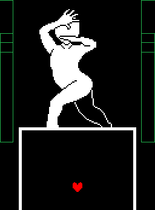 |
BindToArena(false, false) |
If bound, the enemy will move up and down as the Arena resizes.
-
bind:
- If
true, the enemy will be bound to the Arena, moving up and down as it resizes. - If
false, the enemy will NOT be bound to the Arena, instead staying in place while it resizes.
- If
- under(optional,
falseby default): Iftrue, the enemy's sprite will additionally be moved behind the Arena.
Recommended to use ifbindistrue.
Entering
(0, 0) would return the bubble's position to normal.
- x: The horizontal offset of the bubble.
Greater values go further right. - y: The vertical offset of the bubble.
Greater values go further up.
Entering
(0, 0) would return their positions to normal.
- x: The horizontal offset of the hp bar and damage numbers.
Greater values go further right. - y: The vertical offset of the hp bar and damage numbers.
Greater values go further up.
The damage UI is on a layer above the Arena.
Entering
(0, 0) would return its position to normal.
- x: The horizontal offset of the slice animation.
Greater values go further right. - y: The vertical offset of the slice animation.
Greater values go further up.
The slice animation is on a layer above the Arena.
Wave Script Functions [W]
Functions usable from Wave scripts.
This will also call EndingWave once.
This page outlines the various Variables you can use in your own scripts.
All-Script Variables [E/M/W]
These are variables that can be used from any script.
They are also all CYF-exclusive, so be warned!
true.In Unitale, this will be
nil.
Use this to set up compatibility for mods made for Unitale and CYF.
* Still true even if using retromode.
true if you have Safe Mode enabled in the Options menu, false otherwise.
Use this to filter unsafe content in your mod, such as gore.
true if you are playing on a Windows computer, false otherwise.
| Actual CYF Version | Value of CYFversion |
|---|---|
Before CYF v0.6 |
Previous version
In CYF version 0.5.5, this would be 0.5.4.
|
CYF v0.6 - CYF v0.6.1.2 |
Always 1.0 |
CYF v0.6.2+ |
Actual version number |
NOTE! Lua has a built-in string comparing function!
You can very easily check for the right versions of CYF by using:
if CYFversion < "0.6.2.2" then,if CYFversion >= "0.6.2.3" then,And so on.
Encounter Script Variables [E]
Variables usable from an Encounter script.
Battle-related
Variables that control the battle in general.
Your Mod/Audio/ and played automatically.So if you want to play
myBattle.ogg, set this variable to "myBattle".
If not defined, the battle will load
"mus_battle1" instead.
Ogg and Wav are supported.
Changing this during the fight will not change the music.
See The Audio Object.
| Encounter text. |
|---|
encountertext = "Poseur strikes a pose!" |
appears when it's the player's turn (see the image to the right).
Set this before the encounter starts to choose the initial text to display (e.g. "Your path is blocked by two mannequins!").
Special notes:
- Text will NOT go to the next line automatically!
See autolinebreak. -
Special characters:
\nwill go to the next line, whilst adding a star (*).\rwill go to the next line, without adding a star.\"and\'will each display a"or"respectively.
every name in this table will be loaded as a wave the player will have to defend against.
Most of the time, you'll only want one wave at a time.
But you can load multiple waves at the same time.
Example usage:
-- good place for setting `nextwaves`
function EnemyDialogueEnding()
-- plays the wave "Waves/bullettest_chaserorb"
nextwaves = {"bullettest_chaserorb"}
-- plays two waves at the same time
nextwaves = {"bullettest_chaserorb", "bullettest_bouncy"}
end
So if it's set to
4.0, all waves will last only 4 seconds.
If you want, you can set this to
math.huge, and all waveswill have to be ended manually by using EndWave.
| Arena size. |
|---|
arenasize = {155, 130} |
the enemies start speaking and at the beginning of waves.
Within waves, you can still use The Arena Object to change the size of the Arena to something else.
- x: The width of the Arena in pixels.
- y: The height of the Arena in pixels.
will be loaded as a Monster Script.
During and after EncounterStarting, this table will become...
Here is an example to help you understand what this is for:
-- loads the enemies "poseur.lua" and "posette.lua" into battle
enemies = {"poseur", "posette"}
-- later in the script:
function EncounterStarting()
-- by this point, all enemies have been turned into Script Objects
-- (they each point to a monster script)
enemies[1].GetVar('name') -- "poseur"
enemies[2].GetVar('name') -- "posette"
-- more example uses
enemies[1].SetVar('hp', 20)
enemies[2].Call('Kill')
-- see "The Script Object" and "The Monster Script" for more information.
end
moved to a matching position on-screen from this table.
This table must be present to load enemies!
All measurements are measured from the point
(x = 320, y = 231) on screen.
enemies = {"poseur", "posette"}
enemypositions = {
{-20, 0} -- spawn "poseur" 20px left of normal
{ 20, 10} -- spawn "posette" 20px right and 10px higher than normal
}
"DEFENDING", this will fill withScript Objects pointing to every active Wave Script.
This is set after EnemyDialogueEnding, and even after EnteringState.
To use this variable, you need to use Update and GetCurrentState.
End of battle-related
Variables that control the way the battle ends, whether that be by
the player quitting, fleeing, or dying.
They are also all CYF-exclusive, so be warned!
If you set this to
true, then the player will be unable to quit the encounter by pressing Esc.
| No flee option. |
|---|
flee = false |
If you set this to
false, then the "Flee" option will disappear from the MERCY menu.
Useful for making unescapable battles.
to either fail or succeed every time.
Doesn't exist by default.
true: Succeed every timefalse: Fail every time
Otherwise, it is a 50% chance, as it is in Undertale.
Doesn't exist by default.
If you create this, a random string from this table will be shown
if the player successfully flees with the "Flee" option.
Otherwise, a pre-set list of strings will be chosen from instead.
If set, the music you choose here will play during the Game Over screen.
Works the same as music.
If not set, the Game Over screen will use
"mus_gameover".
If set, the strings in this table will be shown in order on the Game Over screen.
Otherwise, the default Undertale text will be used, such as:
"You're our only hope!" "<name>...Stay determined!"
* If revive is
true, this text will be shown when the player revives.
true, whenever the player dies, their soul will re-fuse, as in Undertale,and they will be revived and continue battle.
* If deathtext is set, its text will be displayed just before reviving.
Otherwise, no text will be shown.
Text-related
Variables that control text, including BattleDialog, encountertext and Text Objects.
They are also all CYF-exclusive, so be warned!
| Auto-line breaking. | |
|---|---|
| (Regular) | autolinebreak = true |
true, forces BattleDialog, encountertext and
enemy dialogue to automaticallygo to the next line when text would go outside of the Arena / dialogue bubble.
This does NOT affect Text Objects, as they always have this behavior.
true, when the player skips text with X, any Text Commands that haven't been typed yet will activate.
See Text Commands.
For example's sake, let's say we have this text:
BattleDialog({"Time to change sprite.\n[func:ChangeSprite,sans2]"})What happens if the player presses X before the text has finished typing?
Normally,
[func:ChangeSprite,sans2] would NOT activate.But with
playerskipdocommand as true, it would activate.
This means that you don't have to worry about the player skipping over important Text Commands.
Monster Script Variables [M]
Variables usable from all Monster scripts.
Because the Encounter Script also has access to all Monster and Wave scripts,
You can use this variable to edit any part of the entire fight from any script.
Identical to Encounter in Wave Scripts.
By using this, you can control variables and functions in any script from anywhere!
Some example uses:
DEBUG(Encounter["turncounter"]) -- get "turncounter" from the Encounter script
Encounter.SetVar("genocide", true) -- set a variable in the Encounter
Encounter.Call("PlayerHurt", 4) -- call a function in the Encounter
Encounter["enemies"][2].Call("SetSprite", "second") -- even access other Monster scripts o.oSee The Script Object.
Battle-related
Variables that control the general battle against this monster.
For example:
"Papyrus is trying hard to play it cool."and
"Froggit hops to and fro.".
You can fill this with as many strings as you like.
This gets read from by RandomEncounterText from a random enemy.
Useful for changing the encounter text based on act commands the player
performs, if you change
comments from HandleCustomCommand.
| ACT commands. |
|---|
commands = {"Act 1", "Act 2", "Act 3"} |
Note that these commands can be in lowercase as needed.
When used, a command's name will be passed to HandleCustomCommand IN ALL CAPS.
So if I use
Act 1 in-game, HandleCustomCommand would receive "ACT 1".
Note the Check command in the screenshot. It was not defined in commands.
It is there by default and doesn't call HandleCustomCommand. It has its own behavior.
It can be removed, though. See cancheck.
If you set this to
true, your monster's name will become yellow.
The "Spare" text in the "MERCY" menu will become yellow as well,
and choosing it will spare any spareable monsters (see OnSpare).
(Setting this does nothing, use SetActive instead.)
An active monster will appear in menus and say enemy dialogue.
A monster will be inactive if they are dead, spared, or used
SetActive(false).
See SetActive.
If this variable is
true, then when the monster should die (HP drops to 0), it will stay alive anyway.
Note that monsters' hp does drop below 0, even without this variable.
But it only shows up in the FIGHT menu, and only if
unkillable is true.
Dialogue-related
Variables that control what this monster says.
If currentdialogue is NOT set when the enemies start speaking,
a random string from this table will be shown instead.
Overrides randomdialogue when set.
This is meant mainly for special dialogue sequences, and special cases (such as
Papyrus saying
"Nyeh heh heh!" every time you use Check).
This variables gets deleted automatically after the enemies are done speaking!
This must be set to a valid bubble image's name to work,
such as
dialogbubble = "rightwide" for rightwide.png.
Here is a list of valid bubbles you can choose from:
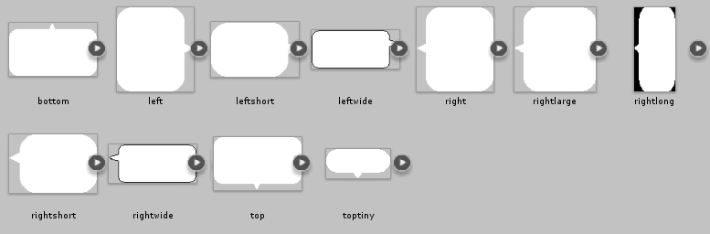
These are located in
CYF/Default/Sprites/UI/SpeechBubbles, if you want to see for yourself.
Custom bubbles can be added by creating
Sprites/UI/SpeechBubbles in your Mod's folder, and adding in your own.
This must be set to a valid font name to work.
This is the same as applying
[font:x] to every line of dialogue.
See Text Commands.
This must be set to a valid voice name to work.
This is the same as applying
[voice:x] to every line of dialogue.
See Text Commands.
Stat-related
Variables that control this monster's stats in game, and what happens when you Check them.
This command displays the monster's name, atk, def and check text.
If this variable is
true, a Check command will always appear in the ACT menu.Even if commands is
{}.
This will NOT call HandleCustomCommand!
However, this built-in command works the same as this:
BattleDialog({ string.upper(name) .. " " .. tostring(atk) .. " ATK " .. tostring(def) .. " DEF\n" .. check })Set this variable to
false to disable the built-in command.
Doing so is an easy way to make a "fake" Check screen, which doesn't match up to the monter's stats.
Used with the default "Check" command.
Will be displayed after the name, atk and def in the default "Check" command.
Has no effect otherwise.
This name is displayed in "ENEMYSELECT", and in the default "Check" command.
Note that Text Commands, such as
[color:rrggbb] CAN be applied to a monster's name!
At the beginning of the battle, this becomes the monster's max hp.
This must be set before battle start.
This DOES drop below 0 when the monster is killed, but normally they would die right away and you wouldn't be able to see it.
If unkillable is true, this monster will not die when their hp drops below 0.
If you ever want to change the monster's max hp during the battle, use maxhp.
By changing this, you can change the monster's max hp.
This is useful for making a second phase for a monster, in which they gain a large amount of hp.
Used only in the default "Check" command.
This does NOT control how strong the monster's attacks are!
That is calculated whenever a bullet hits the player.
See OnHit.
Controls how much damage the monster takes when being attacked by the player.
This is also shown in the default "Check" command.
Undertale's damage formula is used when attacking enemies, and it uses this as part of the formula.
The formula is:
damageDealt = ((w + a - d) + r) * b
Where:
* w = Player's weapon ATK
* a = Player's base ATK
* d = Enemy's DEF stat
* r = Random number between 0 and 2
* b = Number based on the distance between the "fight" line and center of the target
If the actual distance is <= 12 pixels, this is 2.2
Otherwise, it's 0 for the very left/right edge and 2 for the center
If the player would deal 0 damage or less, the MISS text will display instead.
At the end of battle, this much xp will be awarded to the player.
If this is not defined, the player will be given 0 xp from this monster when the battle ends.
Otherwise, it will use this amount.
At the end of battle, this much gold will be awarded to the player.
If this is not defined, the player will be given 0 gold from this monster when the battle ends.
Otherwise, it will use this amount.
Graphical
Variables that control how this monster appears during battle.
The sprite located at
Your Mod/Sprites/<sprite>.png will be used.
This variable does NOT control the monster's Sprite Object!
See monstersprite.
You can treat and control this as a regular Sprite Object.
Technically, SetSprite(filename) is a shortcut to:
monstersprite.Set(filename)
Some other example uses are:
monstersprite.rotation = 90 -- rotate the monster sprite 90°
monstersprite.SetAnimation({"sans1", "sans2", "sans3"}) -- set an automatic animation
monstersprite.alpha = 0 -- hide the monster spriteSee The Sprite Object.
These are exactly equivalent to
monstersprite.absx and monstersprite.absy respectively.
NOT related to enemypositions!
See sprite.absx / sprite.absy.
Wave Script Variables [W]
There are only two pre-defined variables accessible from Wave scripts:
Because the Encounter Script also has access to all Monster and Wave scripts,
You can use this variable to edit any part of the entire fight from any script.
Identical to Encounter in Monster Scripts.
By using this, you can control variables and functions in the any script from anywhere!
Some example uses:
Encounter.SetVar('wavetimer', 10) -- set a variable in the encounter
Encounter.GetVar("enemies")[1].Call("BindToArena", {false, true}) -- call a monster script function
Encounter.Call("PlayerHurt", 4) -- call an Encounter script functionSee The Script Object.
So if the current wave is
Waves/bullettest_chaserorb.lua, this will be "bullettest_chaserorb".
What are Text Commands?
Text commands are strings inserted into:
As an example,
[color:rrggbb] lets you change text color to any hexadecimal color:
currentdialogue = {"[color:FF0000]Hello, this is some text."}* NOTE:#FF0000is Red.
This would appear in-game as:
Graphical
These text commands change how the letters themselves look.
[color:rrggbb] |
|---|
"[color:ff0000]Hello, this is some text." |
[color:rrggbb]
All letters after this command will be changed to the given hexadecimal color.
It resets after each line of text.
Here are a few examples:
| Hexadecimal Number | Displayed Color |
|---|---|
[color:ff0000] |
Determination |
[color:003cff] |
Integrity |
[color:00c000] |
Kindness |
[color:ffff00] |
Justice |
[color:d535d9] |
Perseverance |
[color:fca600] |
Bravery |
[color:42fcff] |
Patience |
[color:000000] |
Black |
[color:ffffff] |
White |
[alpha:aa]
All letters after this command will be changed to the given opacity (alpha) value, in hexadecimal.
It resets after each line of text.
Using
[alpha:00] will make completely transparent text, andusing
[alpha:ff] will make completely opaque text.
[starcolor:rrggbb]
Values must be given in hexadecimal.
See
[color:rrggbb] for possible values.
In CYF,
[color:rrggbb] does this automatically.
[effect:x] and [effect:x,intensity]
Here are the possible text effects you can use:
x |
intensity |
Effect | Uses in UT |
|---|---|---|---|
none |
N/A | Letters will stay completely still. | Not really used |
rotate |
Radius of rotation.
Default value is 1.5.
|
Letters will "rotate" (orbit) around their origin, with a radius of intensity pixels.
|
Random encounter enemies |
shake |
Distance to shake.
Default value is 1.0.
|
Letters will shake constantly, up to a maximum of intensitypixels away from their origin. |
Flowey |
twitch |
Distance to twitch.
Default value is 2.0.
|
Letters will twitch randomly, up to a maximum of intensitypixels away from their origin. Works like shake, but forone letter at a time at random. |
Battle text box |
Use text effects like any of these:
[effect:none]
[effect:shake,2]
[effect:twitch,1.7]
[effect:rotate]
[font:x]
Here is a list of valid fonts you can choose from:
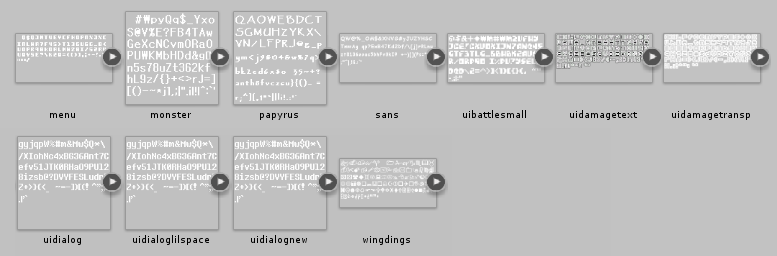
These are located in
CYF/Default/Sprites/UI/Fonts, if you want to see for yourself.
Custom fonts can be added by creating
Sprites/UI/Fonts in your Mod's folder, and adding in your own.
[charspacing:number]
Negative numbers decrease the space between letters, while positive numbers increase it.
The default value is
3.Fonts can specify a
<charspacing> tag that sets this value.
[linespacing:number]
Negative numbers decrease the space between lines, while positive numbers increase it.
The default value is
0.Fonts can specify a
<linespacing> tag that increases this value.
[mugshot:x]
Chooses a face (mugshot) to display next to text in the Overworld text box.
Images are loaded from
Your Mod/Sprites/Mugshots/.
Functional
These text commands all perform actions or set properties for the text as a whole.
[func:x] and [func:x,argument]and
[func:x,{argument1, argument2, ...}]
This is an extremely useful text command.
x should be the name of ANY function in the script. This includes engine functions and your own functions.You can also supply one or more arguments.
Here are some example uses:
text = "hoi hoi this is dog [func:dog] and now the music changed" function dog() -- custom function! Audio.LoadFile("dog_music") end -- In-game, you will see "hoi hoi this is dog", the music will change, -- then "and now the music changed"!
text = "dog with arguments!! [func:newmusic,temietheme] so intense!" function newmusic(yourargumentname) Audio.LoadFile(yourargumentname) -- this example will load and play "temietheme.ogg"! end
-- Make an enemy say "I won't fight you." and skip their turn currentdialogue = {"[noskip]I won't fight you.[func:State,ACTIONSELECT]"}
If you're worried about players skipping over an important
[func:x] call,see playerskipdocommand.
[noskip] and [noskip:off]
By typing
[noskip] anywhere in your text, your text willbecome unskippable whenever the text reaches that point in-game.
Put this at the very beginning of a line of text to make the entire line unskippable.
In CYF, you can use
[noskip:off] to undoa previous
[noskip] instance.This will make text skippable again.
[instant] and [instant:allowcommand]
Whenever the text reader reaches this command, all text after this point appears instantly,
stopping at the next instant:stop, instant:stopall
or the end of the text.
In CYF, you can use
[instant:allowcommand] to alsoexecute commands following this one, in the exact same manner as playerskipdocommand.
[instant:stop] and [instant:stopall]
After instant or instant:allowcommand in a line of text, add
[instant:stop]to end the effects of instant and keep typing text normally.
[instant:stop] stops [instant] and [instant:allowcommand].[instant:stopall] stops [instant], [instant:allowcommand], and Player skips from pressing X.
[next]
You can use this for some textbox trickery, or combine it with commands
such as noskip, w and func to make automatic timed sequences.
Here is an example to replicate some of Flowey's text:
first line: "[noskip]RUN. [w:30]INTO. [w:30]THE.\n[w:30]BULLETS!![w:30]
[func:SetSprite,floweyRight][w:30][func:SetSprite,flowey][next]"
second line: "[instant]RUN. INTO. THE.\nfriendliness\npellets"[finished]
Marks this dialogue bubble as finished.
In "ENEMYDIALOGUE", you can not press Z to progress
until all dialogue bubbles are finished.
They become finished automatically when reaching the end of their text,
or when this command is used.
[nextthisnow]
Progresses all monster's dialogue to the next line instantly.
This effect happens regardless of if any bubbles are finished.
[waitfor:key]
Check the Key List for a list of valid key names to enter here (
term).
[name]
replaced by the Player's name.
This is identical to typing:
"Hello, world!\nHello, " .. Player.name .. "!"
See Player.name.
[health:x,y]
replaced by the Player's name.
-
x: Can be a number OR a string:-
number: The amount to heal the Player by.
Can be negative, but can NOT kill the Player
(Player.hp won't go below 1). -
string:
kill: Instantly kills the Player.Max-1: Sets the Player's hp to(Player.maxhp - 1).Max: Sets the Player's hp to Player.maxhp.
-
number: The amount to heal the Player by.
-
y: Optional. Ignored unlessxis a number:-
killable: Ifxis negative, the player's new HP
value can go below 1 and kill the Player. -
set: Acts like
Player.hp = 4
instead of
Player.hp = Player.hp + 4
(ifxis4).
-
Examples:
[health:4] -- heals 4 HP
[health:-5] -- hurts 5 HP, but can't go below 1 HP
[health:kill] -- kills the player
[health:10,set] -- sets the player's hp to 10
Text-related
These text commands all change the way the text functions.
[w:x]
Biggers numbers will pause for longer.
Technically: This will pause the text for
x * 4 in-game frames.
Calling
[w:1] will freeze it for 4 in-game frames.[w:4] is 16 in-game frames, [w:10] is 40, and so on.
[waitall:x]
x times as long to type as normal.
Use
[waitall:1] for the default text speed.
Note that this is slightly different from w, in that
[w:x]will multiply its argument by the argument used in
[waitall:x].
* NOTE: Overrides speed.
[speed:x]
x characters every 4 frames. Default is 1 character / 4 frames.
Supports non-integer numbers such as
0.25.
Typing
[speed:4] will type at 4x the regular speed:
4 characters / 4 frames = 1 character per frame.
Other values will give other results, such as
[speed:0.25] for 1/4th of the regular speed.
* NOTE: Overrides waitall.
[letters:x]
x characters after this command will be typed instantly,and then the text will return to its normal speed.
As an example:
"Hello, please [letters:9]skip this."
Will type
Hello, please as normal, then skip this will appear instantly,and finally, the
. will type out as normal.
This is identical in function to:
"Hello, please [instant]skip this[instant:stop]."
Audio-related
These text commands control the text's voice, or play audio of some kind.
[novoice]
Technical note: In Unitale, if this command is anywhere in your text,
it will be activated immediately when your line starts.
[voice:filename]
As an example, to use Sans's voice, type
[voice:v_sans].
Here is a list of valid voices you can choose from in CYF:
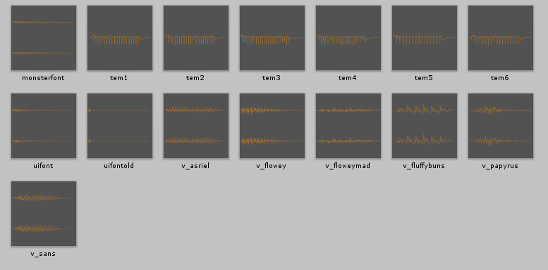
These are located in
CYF/Default/Sounds/Voices, if you want to see for yourself.
Custom voices can be added by creating adding your own
.ogg or .wav files to:YOUR MOD/Sounds/Voices
Technical note: In Unitale, if this command is anywhere in your text,
it will be activated immediately when your line starts.
[music:x]
x |
Effect |
|---|---|
play |
Shortcut to Audio.Play(). |
pause |
Shortcut to Audio.Pause(). |
unpause |
Shortcut to Audio.Unpause(). |
stop |
Shortcut to Audio.Stop(). |
null | |
nil | |
Name of a song inYOUR MOD/Audio
|
Runs Audio.LoadFile(x), wherex is the name given as the argument.
|
[sound:x]
YOUR MOD/Sounds(can be an ogg or a wav).
Identical to Audio.PlaySound.
* YOU WON!
* You earned 0 XP and 0 gold.
* also the docs are broken now